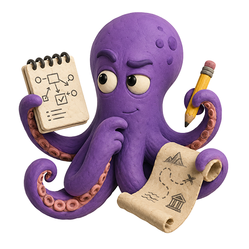
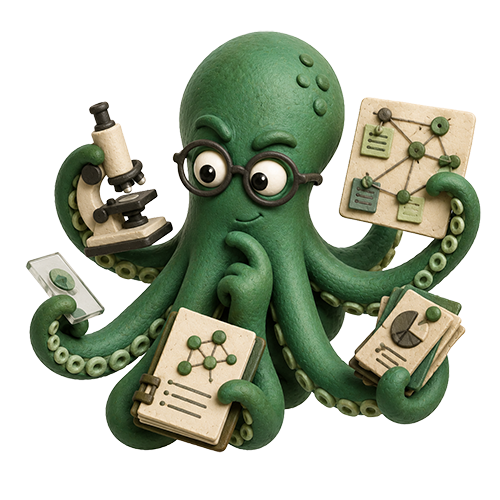
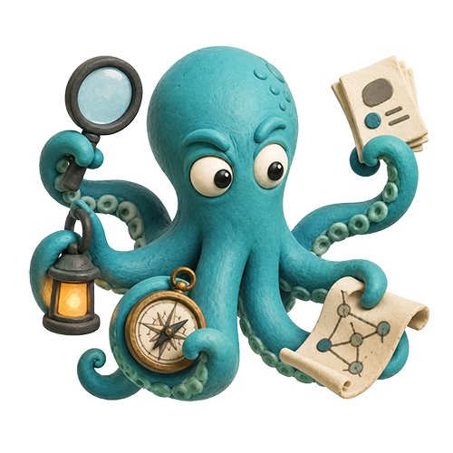
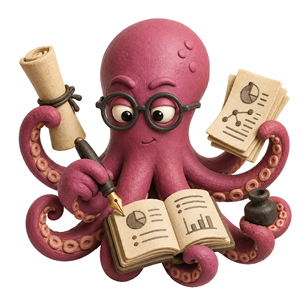

Ask in the reef
Type a question in the ocean. Choose Deep Research, an Experts panel, or a Documents co-write.

Octopi AI is an interactive research reef. Four clay octopus agents plan, gather evidence, write and review together while you watch, steer and decide. Their findings grow into knowledge bubbles you can share with a whole garden of collaborating pods.
Welcome back, . Dive back into your reef →

Type a question in the ocean. Choose Deep Research, an Experts panel, or a Documents co-write.

The Strategist proposes objective, scope and queries. Nothing searches until you say so.

The Investigator gathers sources, the Synthesizer writes from them, the Reviewer checks every citation. Each agent keeps its own collection.

Contribute collections to your crew's data bubble, save project files, and work together through Google Drive.
Everything runs as an illustrative demo out of the box. Connect your UF NaviGator key (and a Tavily key for web search) to run real research; your work is saved in this browser and can be exported or synced to Drive at any time.